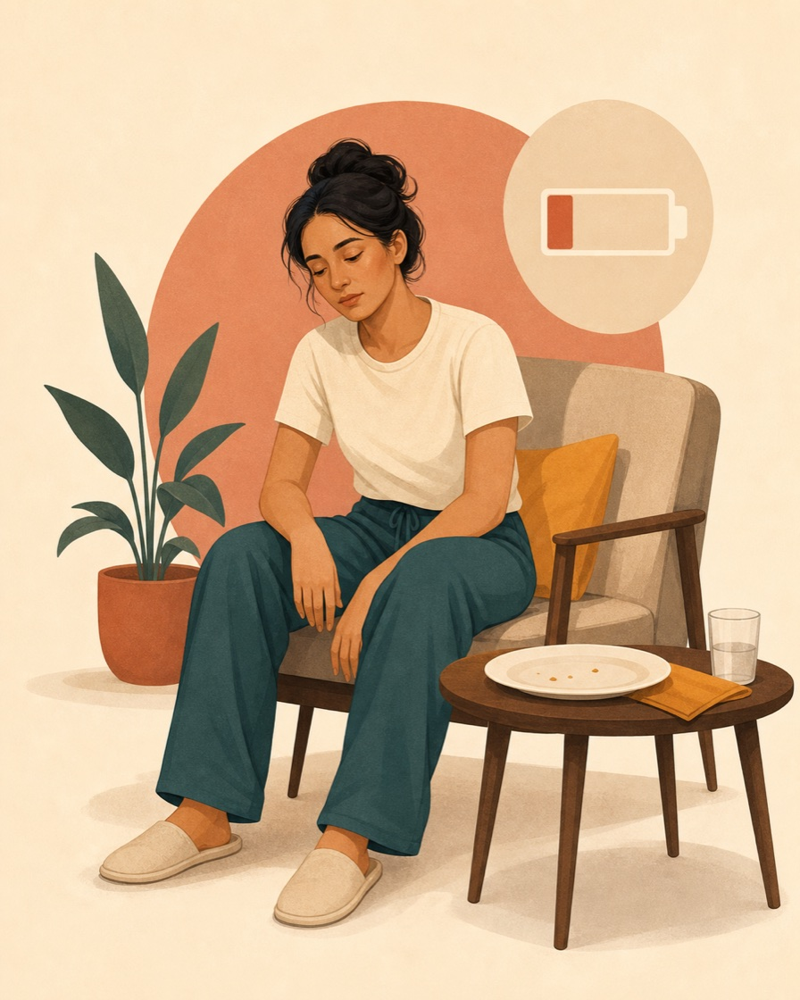

Low fuel
When the body gets too little
Running on empty
Without enough energy and nutrients, the body has less available for daily movement, concentration, temperature control, repair and recovery.
- Tired or weak
- Cold or light-headed
- Hard to focus
- Slower recovery